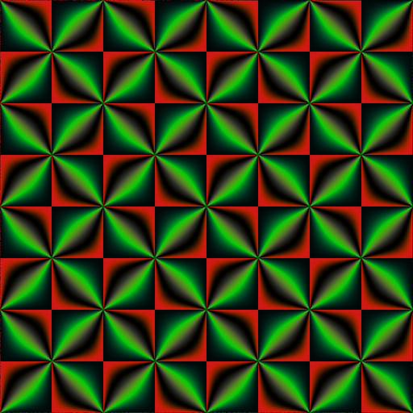

Conformal parameterization of the torus
You can forget my post Mapping a picture on a donut or a Hopf torus. Almost everything I wrote in this post is wrong. I have even been unable to define what is the conformality property of a parameterization. Well, I don’t delete it because nevertheless it contains nice pictures.
So let’s restart. Consider a torus with major radius \(R\) and minor radius \(r\). Define \(s = \sqrt{\frac{R^2}{r^2}-1}\), the so-called aspect ratio of the torus. Then a conformal parameterization of this torus is given by \[ f(u, v) = \begin{pmatrix} \dfrac{s \cos\frac{2\pi u}{s}}{\sqrt{s^2+1} - \cos 2\pi v} \\ \dfrac{s \sin\frac{2\pi u}{s}}{\sqrt{s^2+1} - \cos 2\pi v} \\ \dfrac{\sin 2\pi v}{\sqrt{s^2+1} - \cos 2\pi v} \end{pmatrix}, \qquad 0 \leqslant u < s,\, 0 \leqslant v < 1. \] Well, not really: only up to a scaling. This parameterization does not necessarily yield a torus with major radius \(R\) and minor radius \(r\), but the torus it yields has the same shape: the ratio of the major radius over the minor radius is \(R/r\).
The square torus
When \(s = 1\), the torus is said to be square. Let’s consider this case first. We take \(R = \sqrt{2}\) and \(r = 1\).
The torus is square, and the parameterization is conformal. That means that a square pattern fits well on the torus, in particular the angles that can be found in the pattern are preserved when one maps this pattern to the torus with the help of this parameterization.
Let’s see. We need a square pattern. I’m going to do one with the help of a Weierstrass \(\wp\)-function. It is implemented in my package jacobi. I compute its (complex) values on a square grid, and with the help of my package RcppColors, I map each value to a color.
library(jacobi)
library(RcppColors)
# generate the values of wp on a grid
x <- y <- seq(-4, 0, length.out = 1024L)
f <- function(x, y) {
z <- complex(real = x, imaginary = y)
wp(z, omega = c(0.5, 0.5 + 0.5i))
}
Z <- outer(x, y, f)
# map them to colors
img <- colorMap5(Z)
# plot
opar <- par(mar = c(0, 0, 0, 0))
plot(
c(-100, 100), c(-100, 100), type = "n", xaxs ="i", yaxs = "i",
xlab = NA, ylab = NA, axes = FALSE, asp = 1
)
rasterImage(img, -100, -100, 100, 100)
par(opar)
There are some squares and some kind of “diagonals” on this image. The diagonals always meet at right angles. The conformal parameterization is implemented in my package cgalMeshes (in the github branch of the Github repository). Let’s make two torus meshes: the first one with the usual parameterization and the second one with the conformal parameterization, and let’s map the image on each of them:
library(rgl)
library(cgalMeshes)
mesh1 <- torusMesh(
R = sqrt(2), r = 1, nu = 1024L, nv = 1024L, conformal = FALSE
)
mesh2 <- torusMesh(
R = sqrt(2), r = 1, nu = 1024L, nv = 1024L, conformal = TRUE
)
clrs <- c(img)
mesh1[["material"]] <- mesh2[["material"]] <- list("color" = clrs)
# plot
open3d(windowRect = 50 + c(0, 0, 640, 320))
clear3d(type = "lights") # destroy current lights
light3d(x = -50, y = 100, z = 100)
bg3d("#363940")
mfrow3d(1, 2)
view3d(-25, -25, zoom = 0.75)
shade3d(mesh1, specular = "gold")
next3d()
view3d(-25, -25, zoom = 0.75)
shade3d(mesh2, specular = "gold")The “diagonals” meet at right angles on the conformal torus, but not on the other one. This is what we expected.
Let’s try with another pattern. Thanks to the imager package, I will transform the previous image with the Sobel operator.
library(imager)
# transform the raster to an 'imager' image
im1 <- as.cimg(
aperm(
array(
col2rgb(img) / 255,
dim = c(3, 1024, 1024)
), c(2L, 3L, 1L)
)
)
# Sobel transformation
Sobel <- function(im) {
M <- rbind(
c(-1, -2, -1),
c( 0, 0, 0),
c( 1, 2, 1)
)
imX <- convolve(im, as.cimg(M))
imY <- convolve(im, as.cimg(t(M)))
imXY <- enorm(list(imX, imY))
pmax(pmin(imXY, 1), 0)
}
# apply Sobel transformation and get the colors as hex codes
im2 <- Sobel(im1)
r <- c(squeeze(R(im2)))
g <- c(squeeze(G(im2)))
b <- c(squeeze(B(im2)))
clrs <- rgb(r, g, b)Here is the result:
We map this image as before on the tori. Here is the result:
Non-square torus
Now we take \(R = \sqrt{5}\) and \(r = 1\), so that the aspect ratio is \(s = 2\). Thus, to see the conformality property, we will have to map a rectangular image to the torus, with the same aspect ratio. Let’s do such an image. We just concatenate the previous image to itself.
library(jacobi)
library(RcppColors)
# generate the values of wp on a grid
x <- y <- seq(-4, 0, length.out = 512L)
f <- function(x, y) {
z <- complex(real = x, imaginary = y)
wp(z, omega = c(0.5, 0.5 + 0.5i))
}
Z <- outer(x, y, f)
# map them to colors
img <- colorMap5(Z)
# plot
opar <- par(mar = c(0, 0, 0, 0))
plot(
c(-200, 200), c(-100, 100), type = "n", xaxs ="i", yaxs = "i",
xlab = NA, ylab = NA, axes = FALSE, asp = 1
)
rasterImage(img, -200, -100, 200, 100)
par(opar)library(rgl)
library(cgalMeshes)
mesh1 <- torusMesh(
R = sqrt(5), r = 1, nu = 1024L, nv = 512L, conformal = FALSE
)
mesh2 <- torusMesh(
R = sqrt(5), r = 1, nu = 1024L, nv = 512L, conformal = TRUE
)
clrs <- c(img)
mesh1[["material"]] <- mesh2[["material"]] <- list("color" = clrs)
# plot
open3d(windowRect = 50 + c(0, 0, 640, 320))
clear3d(type = "lights") # destroy current lights
light3d(x = -50, y = 100, z = 100)
bg3d("#363940")
mfrow3d(1, 2)
view3d(-25, -25, zoom = 0.75)
shade3d(mesh1, specular = "gold")
next3d()
view3d(-25, -25, zoom = 0.75)
shade3d(mesh2, specular = "gold")Now let’s try with the Sobel-transformed image. Here it is:
I don’t understand why it is different from the square one (it is more brightly). Anyway it looks nice. Here are the tori now:
It’s not very easy to see. Observe carefully the red “diagonals”. Do they meet at right angles on the torus at right? Theoretically yes.